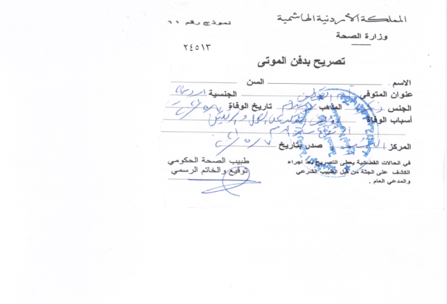
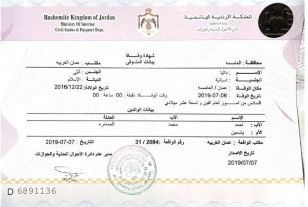
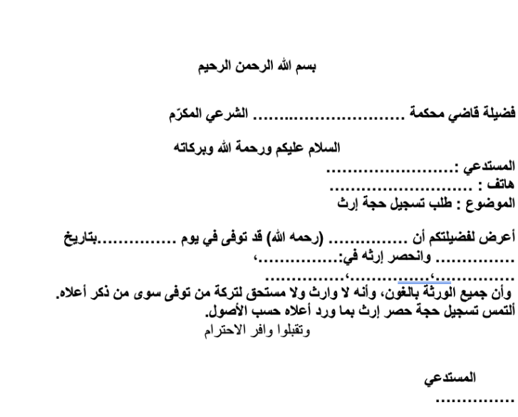
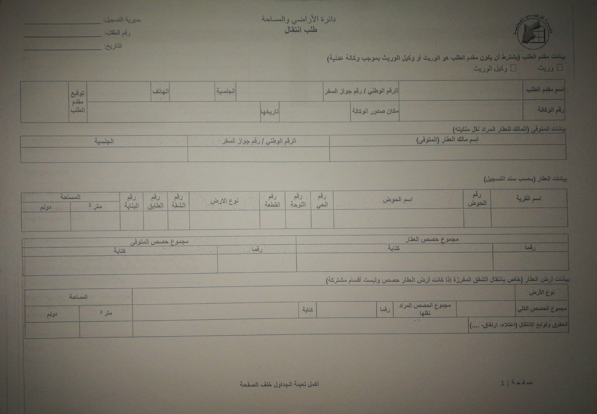
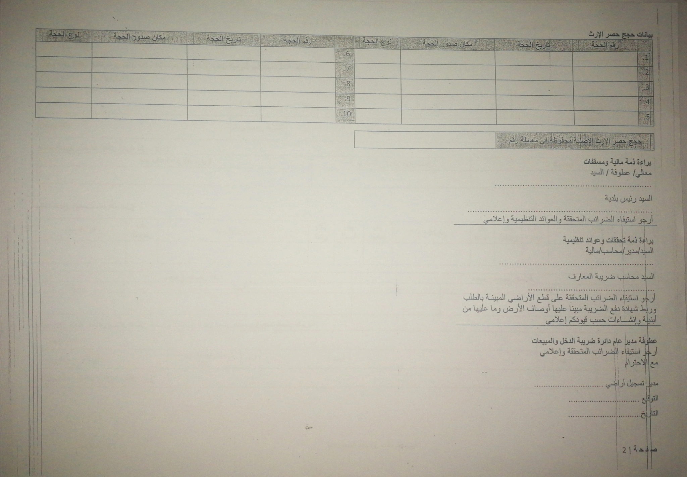

أولًا: عملية استصدار إعلان وفاة ورخصة دفن
بعد أن تتأكد من حدوث الوفاة تبدأ بالإجراءات:
1.تعبئة نموذج “تبليغ عن واقعة وفاة” من قبل الطبيب في المستشفى.
اضغط هنا لتحميل النموذج
يكتب الطبيب تفاصيل الوفاة، ويوقع ويختم
2.استصدار رخصة دفن/ تصريح دفن من قبل الأطباء المخولين بذلك( بخاصة في المستشفيات ودوائر الصحة) فإذا لم يكن هناك ما يمنع (من مثل مرض ما أو الوفاة لأسباب جنائية) يُعطى تصريح دفن ويوقع من قبل الطبيب المسؤول ويختم،

ثانيًا: الدفن
1.نقل المتوفى إلى مؤسسة خدمات الجنائز
ويكون لك الخيار بذلك فمن الممكن تغسيل الميت في المستشفى أو أن تستخدم مركز أو مؤسسة متخصصة بخدمات الجنائز والدفن. نحن مع والدي (رحمه الله) قد استخدمنا “مركز عالم البرزخ لخدمات موتى المسلمين” وكان تعاملهم وأداؤهم
ممتازًا، جزاهم الله خيرًا
التكلفة: تتراوح بين 60 الى 70 دينارًا تشتمل (تغسيل الجثمان وتقديم الكفن وسيارة نقل الموتى).
ملاحظة مهمة:
ما تم ذكره سابقًا في حالة حدوث الوفاة في المستشفى، حيث يقوم طبيب المستشفى بتعبئة نموذج إعلان الوفاة من أجل تقديمه إلى مكتب استقبال وتسريح المرضى في المستشفى أو إلى عائلة المتوفى. أما في حالة حدوث الوفاة في البيت أو
خارج جدران المستشفى، لا أعلم ما الإجراءات التي قد تلزم، قد تكون بأخذه للمستشفى وتحديد سبب الوفاة وقد تضطر لتشريح الجثة أو حتى لاستجواب من قبل الشرطة إن كان هناك اشتباه جناية
ثالثًا: استصدار شهادة وفاة
بعد الدفن وفي فترة ٧ أيام من تاريخ الوفاة يجب عليك إصدار شهادة وفاة وتكون بالخطوات التالية:
ملاحظة مهمة: صوّر هوية المتوفى من الوجهين قبل تسليمها، لأنك ستحتاج لمعلوماتها في المعاملات اللاحقة.
شرط: يجب أن يكون مقدم الطلب من الدائرة الأولى للمتوفى
المكان: الأحوال المدنية والجوازات
الرسوم: 1 دينار
الوثائق المطلوبة:
– نموذج تبليغ عن واقعة وفاة
– هوية المتوفى
– هوية مقدّم الطلب (وصورة عنها)
– دفتر العائلة
خطوات اصدار الوثائق:
1.أخذ دور لتقديم المعاملة.
2.تقديم “نموذج تبليغ عن واقعة وفاة” والوثائق المطلوبة.
3.تسليم هوية المتوفى.
4.دفع الرسوم
5.الانتظار لاستلام الشهادة (كما في الصورة)

ملاحظة مهمة:
إذا تأخر التقديم في إستصدار الشهادة عن ٧ أيام تدفع غرامة قيمتها ١٠ دنانير.
لغايات متابعة المعاملات، تحتاج لاستخراج:
1.من دائرة الأحوال المدنية والجوازات – استخراج قيد أُسري (رسوم ١ دينار)
2.من دائرة الأحوال المدنية والجوازات – استخراج دفتر عائلة جديد (رسوم ٣ دينار)
3.من دائرة الأحوال المدنية والجوازات – تحتاج إلى صورة مصدّقة عن شهادة الوفاة (رسوم طوابع ٤٠ قرش عن كل صورة).
رابعا: استصدار حجة حصر إرث
المكان: المحكمة الشرعية (محكمة التوثيقات)
أماكن أخرى: دائرة الأراضي
الرسوم: ١١ دينار
الوثائق المطلوبة:
شهادة وفاة (صورة مصدقة)
هوية مقدّم الطلب (وصورة عنها)
قيد أسري
الخطوات:
1.أخذ دور لتقديم المعاملة
2.تقديم “استدعى طلب حجة إرث” بالإضافة للوثائق المطلوبة (شهادة وفاة، قيد أسري، صورة عن الهوية) فيما يلي نموذج مقترح لنص الاستدعى:

3.بعد اطلاع القاضي على الاستدعى، يطلب منك ملء نموذج طلب تحري أملاك (من دائرة الأراضي).
4.بعد تعبئة النموذج توقعه وتختمه من الديوان والقاضي.
5.مراجعة دائرة الأراضي وتقديم طلب التحري ودفع رسوم ١ دينار.
6.العودة إلى المحكمة بورقة دائرة الأراضي بالأملاك التي باسم المتوفى إن وجدت و تقديمها مع المعاملة.
7.يتم جدولة موعد لك لمتابعة المعاملة، قد تستغرق مدة الانتظار ٣٠ يومًا
8.إحضار ٢ شهود للشهادة بأن الإرث محصور بأسماء الورثة الموجودة في الطلب فقط.
9.دفع رسوم ١١ دينار عند المحاسب
10.أخذ الوصل للقاضي أو المأذون الشرعي – بعد إدخال البيانات
11.تعود إلى المحاسب لاعتماد الوصل (المحاسب ينتهي عمله الساعة ١٢ ظهرًا فيجب أخذ هذا الأمر بالاعتبار)
12.العودة إلى القاضي ومتابعة إدخال البيانات في الكمبيوتر وإصدار حجة الإرث، يوقع عليها مقدم الطلب والشهود أمام القاضي ويقروا على صحة المعلومات.
13.ختمها في الديوان ومن ثم بعد ذلك توقيع وختم القاضي.
لغايات متابعة المعاملات، تحتاج لاستخراج:
1.من المحكمة الشرعية – تصديق صورة عن حجة الإرث.
2.وتنبه الصورة المصدقة سارية المفعول لمدة ٤٨ ساعة فقط.
3.و تكلفة الصورة المصدّقة الواحدة ٧ دنانير.
خامسًا: طلب انتقال ملكية
بعد إصدار حجة الإرث وتحديد من هم الورثة وحصة كل منهم، يمكنكم القيام بنقل الملكية للمباني أو الأرض التي باسم المتوفى (الله يرحمه) لأسماء الورثة كل حسب حصته الشرعية من الميراث
نقاط مهمة جدًا عليك أخذها بعين الاعتبار قبل البدء:
أولًا : هذه المعاملة يجب أن تقوم بها في دائرة الأراضي التي يتبع لها العقار أو المبنى الذي ترغب بنقل ملكيته (مثلا مكانها جرش يجب أن تتابع في دائرة أراضي جرش وهكذا )
ثانيًا: البداية تكون بإحضار طلب انتقال من دائرة الأراضي قبل اصدار أي ورقة لأنّ عليك ختم هذا الطلب عند كل مؤسسة بعد إصدار أي ورقة.
ثالثًا: الصورة المصدقة عن حجة الإرث صالحة لمدة ٤٨ ساعة فقط لذا يجب أن تستخرحها آخر شيء قبل تقديم الطلب.
المكان: دائرة الأراضي.
أماكن أخرى: مديرية الضريبة، أمانة عمان أومن يقوم مقامها في المحافظات الأخرى(البلدية مثًلا)، المحكمة الشرعية.
لرسوم: سند تسجيل 1.6 دينار، مخطط أراضي 3.6 دينار، مخطط تنظيمي 5 دينار، صورة مصدقة عن حجة الأرث 7 دينار، رسوم معاملة انتقال 3 دينار.
الوثائق المطلوبة:
1.صور عن هويات الورثة
2.براءة ذمة للمتوفى من الضريبة
3.براءة ذمة للمتوفى من الضريبة
4.سند تسجيل
5.مخطط أراضي بتاريخ حديث
6.مخطط تنظيمي بتاريخ حديث
7.صور عن جوازات السفر للورثة غير الأردنيين
8.صورة مصدّقة عن حجة الإرث-(مختومة وبشروحات عدم وجود تخارج)
9.إذا وجد تخارج إرفاق صورة عن كل تخارج تم ( والتخارج أي التنازل بحصة أو حصص من العقار/الأرض لأحد الورثة)
الخطوات:
1.من دائرة الأراضي أخذ طلب انتقال كما في الصورة التالية


2.استخراج براءة ذمة من الضريبة (هذه المعاملة قد تستغرق أشهر) وقد تحتاج لمعقب معاملات أو محاسب لمناقشة الضريبة وغيره من التفاصيل المفاجئة.
الضريبة وغيره من التفاصيل المفاجئة.
لا تنسى أن تختم الطلب من الضريبة بعد استخراج براءة الذمة.
3.استخراج براءة ذمة من البلدية / أمانة عمان حسب الجهة التابع لها العقار أو الملك.
تحتاج لزيارة عدة مكاتب في البلدية للحصول على الأختام وعددها يزيد على الـ10 أختام، ومنها ختم محكمة البلدية.
لا تنس أن تختم الطلب من البلدية / أمانة عمان بعد استخراج براءة الذمة
4.استخراج سند تسجيل و مخطط أراضي
حديثًا أصبح استخراجهما فقط أونلاين من خلال
موقع الدائرة الالكتروني
ملاحظات مهمة:
- لايمكنك استخراج سند تسجيل أونلاين إلا بعد تسجيل حساب جديد
- لتسجيل حساب جديد عليك زيارة دائرة الأراضي ليقوم موظف الدائرة بإنشاء الحساب وإدخال رقم هاتفك وتفعيل الحساب.
- عليك استخدام الرقم الوطني ورقم الهوية للمتوفى الذي كان العقار باسمه وليست معلوماتك أنت.
5.استخراج مخطط تنظيمي من دائرة الأراضي
6.تقدم الطلب لموظف الاستقبال/ التسجيل في دائرة الأراضي مع كل الأوراق والطلب وعليه كل الاختام المذكورة، وتكتب رقم هاتفك الخلوي للتواصل معك.
7.ستصلك رسالة على هاتفك بعد أيام للمراجعة لاستلام المعاملة
8.تذهب لدائرة الأراضي وتسلم ملف المعاملة ويطلب منك تقديمه للقسم الفني (المقدر)
9.تصلك رسالة على هاتفك لدفع الرسوم الكترونيا
10.تسدد الرسوم وتستخرج وصل الدفع الالكتروني من المحاسب وتسلمه للقسم المعني وتراجع بعد أسبوع.
11.تراجع بعد أسبوع أو 10 أيام وتستلم (الكوشان) بأسماء الورثة
سادسًا: الإرث المنقول
و تعني عبارة الإرث المنقول كل ما يورث عن المتوفى عدا المباني و الأراضي من مثل الأموال والذهب والأثاث وما إلى ذلك من ممتلكات أو حتى الراتب التقاعدي.
٦-١ الأرصدة أو الأسهم في البنوك
المكان: إحدى المحاكم الشرعية
أماكن أخرى:البنوك، محكمة التركات.
الرسوم:
1.طلب استدعى ٢ دينار
2.رسوم معاملة ١ دينار عن كل بنك
الوثائق المطلوبة:
صورة عن هوية مقدم الطلب (أحد الورثة)
المرحلة الأولى – محكمة شرعية *
1.كتابة استدعى طلب تحصيل أرصدة (عادة يقوم بذلك المكاتب أمام المحكمة ) ويطلب بدل خدمة ٢ دينار، ويتم فيها ذكر اسماء البنوك التي ترغب بالاستفسار عن الأرصدة فيها.
هنا نموذج للاستدعى يمكنكم طباعتها واستخدامها مجانًا (اذا استخدمت الاستدعى الموجودة هنا لن تضطر لمساعدة المكاتب أو دفع ثمنها)
***استدعى-تحصيل-أموال
2.إرفاق الاستدعى بصورة عن هوية مقدم الطلب
3.توقيع الاستدعى من القاضي ودفع الرسوم – دينار واحد عن كل بنك على سبيل المثال ٤ بنوك تدفع ٤ دنانير وهكذا.
4.تقديم المعاملة للكاتب ليدخلها على الكمبيوتر ويطبع لك خطاب موجه لكل بنك على حدة، أي وحسب المثال السابق ٤ بنوك ستستلم ٤ خطابات منفصلة
5.توقع الخطابات من القاضي وتختمها من الديوان
6.تراجع كل بنك على حدة وتسلم الورقة
تنويه: كل بنك له متطلبات عند تسليم الورقة له بعضها يطلب شهادة وفاة، حجة الارث، و براءة ذمة من الضريبة (نسخة أصلية أو صورة مصدقة) لذا كن مستعدًا بهذه الاوراق عند ايصال طلب الأرصدة للبنوك
المرحلة الثانية – محكمة التركات *
الوثائق المطلوبة:
صورة عن هوية مقدم الطلب (أحد الورثة
صورة حجة الارث بتاريخ جديد
براءة ذمة من الضريبة
بعد فترة من تسليم أوراق الاستفسار عن الأرصدة للبنوك ( لا تقل عن شهر) ستقوم البنوك بإرسال إعلام إلى محكمة التركات بالمبلغ الموجود لديها
لن تتصل بك محكمة التركات يجب أن تتابع بنفسك وتذهب وتسأل عن المعاملة.
قبل الذهاب إلى محكمة التركات عليك أخذ الوثائق المذكورة أعلاه (صورة مصدقة عن حجة الارث بتاريخ جديد، صورة الهوية، براءة ذمة من الضريبة)
اكتب استدعى لتحصيل المبلغ – نموذج الاستدعى سيضاف قريبا
***سدد الرسوم لم أعرف كم قيمتها بعد
انتظر فترة ومن ثم يمكن للورثة الذهاب للبنك لاستلام حصته من المبلغ إن وجد أرصدة في البنوك***
٦- ٢ راتب التقاعد – الضمان الاجتماعي
المكان: الضمان الإجتماعي
أماكن أخرى: البنك، إحدى المحاكم الشرعية.
الوثائق المطلوبة:
1.شهادة وفاة
2.صورة عن هوية مقدم الطلب (أحد الورثة)
3.حجة الإرث
4.رقم الـ Iban مصدقة من البنك
راتب التقاعد للورثة يكون فقط للإناث الورثة العزّاب أو الأرامل من ليست لهم اشتراكات أو تقاعد في الضمان (الزوجة، الأم، البنت)، وللذكور القصّر أي من هم أقل من عمر ١٨ سنة .
تنويه: الاناث المشتركات في الضمان اختياريًا يحق لهم الاستفادة من راتب المتوفى
الخطوات:
تراجع مكتب الضمان الاجتماعي وتقدم الاوراق وطلب بالراتب، مع رقم حسابك البنكي الذي ستسلم عليه.
بعد فترة سيتم إيداع الراتب في حسابك من تاريخ الوفاة حتى لو كان بأثر رجعي.
أخيرًا، إذا كان لديكم أي معلومات إضافية هامة أو أي تفاصيل بهذا الخصوص ولم تذكر أن تزودوني بها لإضافتها للدليل لنشر الفائدة والمعرفة للناس صدقة جارية عن أرواح أمواتنا جميعًا.